Audiobook Manager: the GUI at each stage, 2026-09-22 → 2026-11-17
Screens from the first commit to the submission build, in order. Images are the point of each slide; text only labels what the images show.
first commit 25d3000submission build 5d67e0fharness capturesdesign-lab capturesdevice photos
02 / 22
Methodhow the images were made
Three kinds of evidence
Harness captures — historical code, rendered for real
For stages that predate any saved screenshots (Sep 22, Sep 23, Oct 17), the era's own client/ source was checked out with git archive, rendered by a minimal Vite harness with canned data, and screenshotted with Playwright. What you see is the actual era UI — its layout, type, colours and components — not a redrawing.
design-lab captures — the real app
From 2026-11-14: the running app on phone and desktop, captured during the design-lab work. Used for the redesign baseline (gen-0) and for the variant comparison (v1–v4).
Device photos
The household's phones, taken during offline-era testing (spec 26/29). Kept in specs/evidence/.
Colour coding by source
Harness capture of <sha> — historical code, fixture data
design-lab capture — real app, 2026-11-14
Device photo, date — real phone, real household
What this deck does not do
It doesn't rate stages. Early screens are shown as they were, because the work to build them was the same work as now.
It doesn't claim tests were run where they weren't. The design-lab tournament never ran; the deck says so on slides 12–13.
It doesn't sell the redesign. The redesign is shown as a set of changes (slide 08) with its before and after.
Slide 15 lists every source: git SHAs, directories, ledger files.
Variants v1–v4 of the post-redesign build; v4 merged (gen-1 line)
Nov 17
Submission build
Master @ 5d67e0f
04 / 22
Stage 1 · Sep 2225d3000 — prototype
Prototype to check the loop
Desktop — harness capture of 25d3000. Cover URLs 404; public/ was empty, so broken-image icons show.
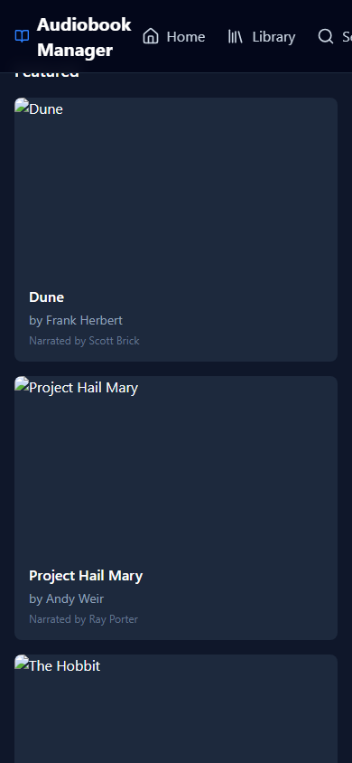
Phone, 390px — same code, same layout reflowed by width. The grid went from 5 columns to 2.
What it was for
To check whether "browse covers → pick a book → press play" was a loop worth building. One screen, mock data, answer found in an afternoon.
What it has
Fixed top bar (wordmark + 3 links); a Featured row of three cards; a 5-column grid; a footer line. Dark slate ground, blue accent.
What it doesn't have
No real data, no folders, no auth, no audio, no resume, no phone layout beyond reflow, no covers.
05 / 22
Stage 2 · Sep 23771731c — scanner wired
The mock becomes a library
Desktop — harness capture of 771731c. Hero + "Scan library" CTA, folders section, grid of real items.
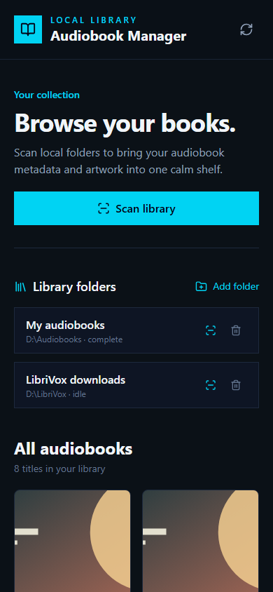
Phone, 390px — same build. Folder rows stack; CTA full width; grid 2-up.
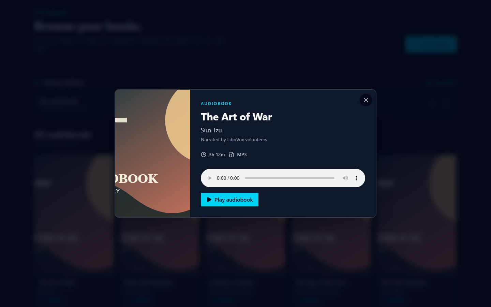
Book dialog — cover, meta, native <audio controls>. Playback worked; chapters existed in the data, not yet in the UI.
Added in this stage
Scanner integration (files → book rows), cover art via /api/audiobooks/:id/cover, working refresh, library roots management, scan trigger + progress, empty state.
Changed in this stage
Mock data removed; palette moved from blue to cyan on near-black; hero + scan CTA became the top of the page; grid gained duration badges and track counts.
Same day, same commit family
6c32f08 added chapter-aware playback and the book dialog. The dialog's two-column layout is still the one in use.
06 / 22
Stage 3 · Oct 2–13auth, profiles, resume
One password, one bookmark per person
Added, in order
Sep 28 → Oct 2: household password gate (99f6dbb) — the app became a family object.
Oct 2: profiles — each person picks their name; progress, favourites, history stay theirs.
Oct 2 (ce5ec22) → Oct 6 (e0e022a): server-side resume position, shown on the grid ("Continue listening", "3 books are part-finished").
Oct 12–13: Browse tab, Discover tab, typed search (specs 20/22), tag manager.
No capture of this era exists. The gate on the right is reproduced from LoginGate.tsx as of 99f6dbb — 49 lines, fetch /api/auth/login, done.
The gate, as committed (99f6dbb)
Audiobook Manager
Enter the household password to continue.
Household password
Sign in
Direct child of the scaffold — the first user-facing auth in the repo, one password for the household, everyone visible to everyone. A reasonable starting point; the UI got more people-shaped later (passkeys, kids accounts).
07 / 22
Stage 4 · Oct 12–17everything built, before the restyle
Every screen exists; none match
Harness captures of 834856d~1 — the Oct 17 build, before any visual work.
None — every surface styles itself: slate panels, cyan accents, outlined chips, native inputs. No tokens, no motion language, no shared layout rules.
Why it still worked
Layouts were conventional and density was high — you could see every feature on one screen. Fine for the builder; the household found the same screens unreadable at a glance — see stage 5.
08 / 22
Stage 5 · Oct 18spec 15 — what changed
The restyle, as a change list
Before — 834856d~1 (harness). Operator controls (folders, scan CTA) above the books; tabs wrap; Continue listening below the fold.After — gen-0 capture, Nov 14 2026 (the restyle build, unchanged by later work). Dock navigation, Continue listening first, book cards with covers.
Dock navigation phone / rail desktop; Continue listening above the grid; operator controls moved after the books — one structural change, on purpose.
Coverage
All ~20 surfaces restyled in one pass: splash, gates, tabs, detail, player, settings, admin. Behaviour unchanged: no props, hooks or routes moved with the restyle.
Cards became canted capsules with marker outlines and tinted-plastic covers. One raspberry dome per view. Tube for progress and chapters. Status colour always accompanied by words.
What didn't change
Features, flows, routes, props. Anything an Oct 17 user did, an Oct 18 user can do the same way — only the chrome is new.
What it cost
One day (2026-10-18), two commits, all ~20 surfaces. Restyle-only is why it fit in a day.
10 / 22
Stage 6 · Oct 19–21spec 15b — what shipped after
What the restyle didn’t fix
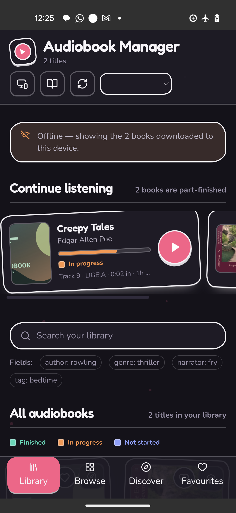
Device photo, 2026-10-19 — offline library, airplane mode, covers intact. First proof the cache worked on hardware.
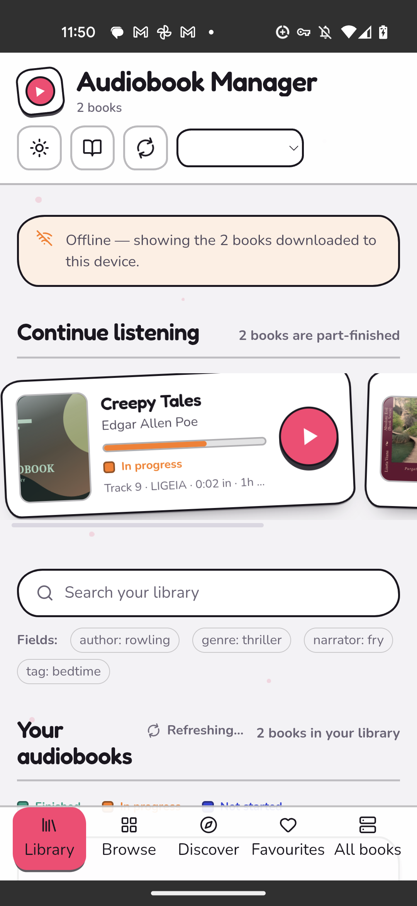
Device photo, 2026-10-21 — same screen two days later, after the restyle + cache work.
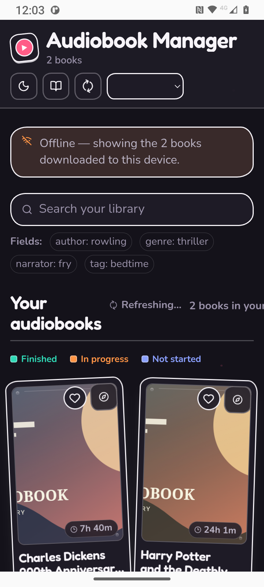
Device photo, 2026-10-21 — same checks on the household's second phone.
Issue fixes (spec 15b)
Issue-by-issue pass from user-testing-2026-10-18.md: layout overflow at 390px, dialog fit at 320px, placeholder leakage in copy, discover latency, stale refresh, ETag cache correctness.
copy.ts (Oct 20–21)
Every user-facing string moved into one table, in two registers (listener/operator). make check-copy bans implementation language from listener copy; CI fails the build.
Offline screens
Offline, locked, no-server and empty-library surfaces (spec 29) — four states that previously rendered as broken, now first-class screens.
11 / 22
Stage 7 · Nov 14the design-lab — what it was
A tournament to pick the best variant
What was planned
Take the post-restyle build, generate four variant branches, score each against a rubric held outside the repo, pick the winner, merge it, repeat.
What ran
Branches design-lab/gen1/v1..v4 cut from cdf0e8f; gen-0 baseline captured (c22f573, tagged).
Every variant passed the same guards: layout, sideways-scroll, dialog fit; 895 tests green at each step.
scripts/capture-ui.js captured phone + desktop, light and dark.
The four variants
Variant
Direction
v1 “quiet hierarchy”
Cover-forward cards, calmer filter rail
v2 “dark-mode luxury”
Dark-only: lamp-lit ground, warm plum surfaces
v3 “newsprint zine”
Risograph paper world; eliminated before judging
v4 “aero polish”
Atmosphere & glass: horizon wash, lamp pool, unified glass
v1 and v2 kept the capsule identity and moved one axis each. v3 was a left-field seed. v4 was steered pass-by-pass by the repo owner from “atmosphere” to fully glassed chrome.
12 / 22
Stage 7 · the variantseach against its baseline, matched theme
The four variants against gen-0
gen-0 (baseline) · light
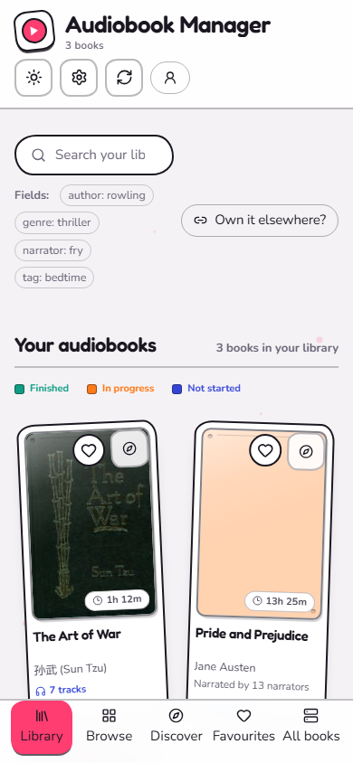
v1 — quiet hierarchy · light. Cards lean harder on covers; calmer chrome. Same tokens.gen-0 (baseline) · dark — v2's comparison pair, since v2 changed dark onlyv2 — dark-mode luxury · dark. Deeper ground, warmer plum sinks, rim light on covers. Light untouched.
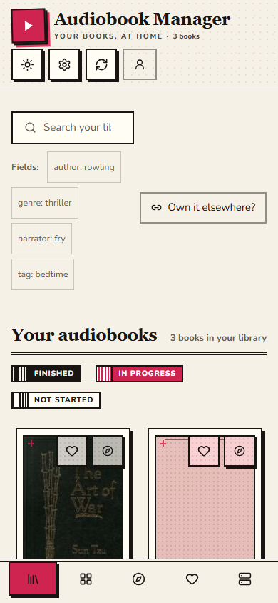
v3 — newsprint zine · light. Riso paper, one spot colour, zero radius. Eliminated before judging (direction, 2026-11-14).
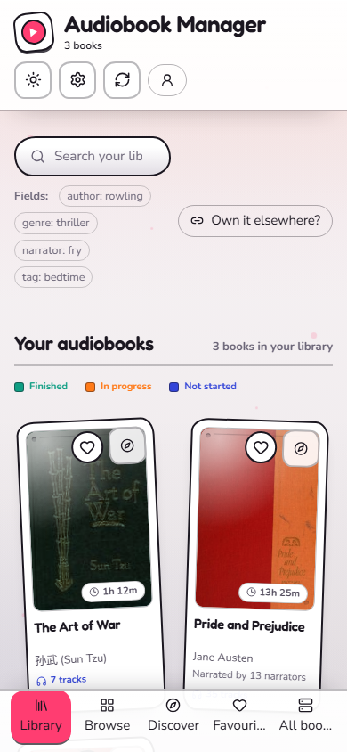
v4 — aero polish · light. Horizon wash, lamp pool, unified glass recipe. Merged to master (8476aa2, ad56ddd).
13 / 22
Stage 7 · the outcomewhat the ledger records
Judging never ran
What was supposed to happen
A vision-model judge scores each variant against the rubric; the winner merges; gen 2 starts.
What happened (ledger.json)
The cloud VL free tier was exhausted; no rubric scores were produced. Every variant's fitness is null.
In-session inspection was used to steer v2 → v4 in place of scores.
v3 was eliminated by direction (2026-11-14), not by measurement.
v4 pass 1 measured as effectively unchanged vs gen-0; passes 2–4 made the atmosphere visible and then the glass consistent.
What shipped
8476aa2 — v4 passes 1–4 merged into the design-lab line.
ad56ddd — design-lab line merged to master: v4 UI + rem font-scale fix + jsdom flake fix + gallery.
v1, v2, v3 remain unmerged branches.
How to read this honestly
No variant was shown to be better than gen-0 by any recorded measurement. The final design is what remained after a human chose between them. The lab produced a mergeable overhaul and a written record; it did not produce evidence of superiority.
fitness: null (v1–v4)0 rubric scoresv4 merged by decision
Gate — first screen. Household password; demo deployments show sign-up instead.
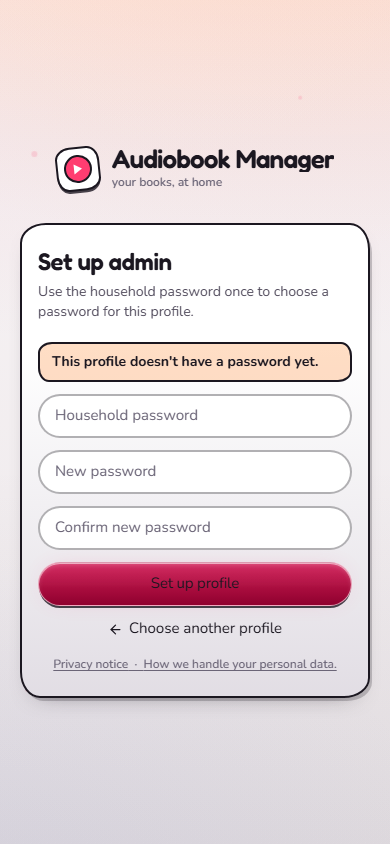
Setup — point the app at a server; Rasp CTA is the shared glass material.
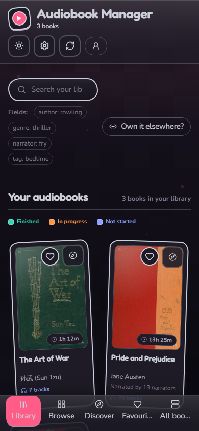
Library · dark — v4 ramp: deeper ground, off-white ink, glass at 88%.Library · desktop, dark
These are the Nov 14 captures of the same build that shipped to master. The design-lab retakes were required twice for these screens — WSL filesystem latency and a frozen preview build both produced screenshots of stale code; both were re-captured.
16 / 22
Recapwhat shipped when
Stage by stage
Date
Commit
UI addition
Sep 22
25d3000
Scaffold: grid, mock data
Sep 23
771731c · 6c32f08
Folders, scan, covers, chapter playback
Oct 2
99f6dbb · ce5ec22
Household gate, profiles, resume on the grid
Oct 12–13
d1bc639 · 203088a · f414560
Browse, Discover, tags, search, Android shell
Oct 18
834856d · d4220e9
Design system + full restyle
Oct 19–21
cb28038 · 59482e3 · 838c736 · b226f4a
Polish, offline screens, one-voice copy
Nov 14
gen-1 v4 · 8476aa2 · ad56ddd
Aero passes 1–4 merged to master
Nov 17
master 5d67e0f
Docs reconciled; brief; API reference
17 / 22
Verificationimage provenance, plainly
What each image is
Images
Source
Caveat
era0-*, eraSep23-*, oct17-*, now-*
Harness render of the era's/current client code, canned data
Data is invented; fixtures resemble the test library (LibriVox public domain)
gen0-*
design-lab capture, Nov 14, live stack
Captures the Oct 18 restyle build as it stood Nov 14 — includes later minor changes
gen1-v2-*-dark
gen-1/v2 branch capture
v2 changed dark only; shown in dark. Light images exist but are out of scope for assessing v2
gen1-v1/v3/v4-*
gen-1 branch captures
v1/v2/v3 were never merged; they render from branch source
offline-*
Device photos, Oct 19/21
Taken during the offline work; stored in specs/evidence/
Gate (slide 06)
Reproduced from LoginGate.tsx @ 99f6dbb
Not a capture; the app never rendered this in isolation after profiles existed
Missing captures: nothing between 99f6dbb (Oct 2) and the Oct 17 harness point. If a stage needs defending in detail, the repo has the code for every one of them.
18 / 22
DESIGN.mdthe contract the UI obeys
Rules, after the restyle
Tokens before components
One semantic remap over two raw palettes; colour changes touch one declaration and both themes move. Fonts self-hosted; 4px grid; radii from a documented scale; motion tokens with reduced-motion respect.
Status colour never travels alone
Every coloured state carries a word and/or icon; the legend sits with status surfaces. Warnings and trophies sound different, not just look different.
Touch targets and type
44px minimum targets; tabular numerals; 100% text-size-adjust so Android's WebView can't inflate layout; WCAG AA documented per ink pair, with the exceptions marked.
One voice in copy
copy.ts holds every string in two registers (listener/operator); make check-copy fails the build on implementation words leaking into listener copy.
19 / 22
Retrospectivewhat the stages share
What the stages share
Bugs clustered at hand-offs: file system → API, browser → WebView, restyle → phone. Every fix landed where the seam showed.
The two changes that made the app feel coherent (spec 15, v4) cost one day each and changed no routes, props or hooks.
Constraints travelled forward: mentions of the grid, the dock and the Tube exist in the codebase before they exist in the design.
Offline was won on the devices, not in the editor: every offline screen is in specs/evidence/.
The lab generated variants; a human picked. The paper trail (ledger, tags, branches) is why that is claimable.
docs/presentations/timeline/ — this deck and the harness
Harness + capture method: README.md in this folder. Fonts in harness captures are fixture files; the app's real faces render in production captures (gen-0, gen-1, now-*).
21 / 22
Closeone line per stage
Fifty-six days,
Stage
What it added
Sep 22 — Scaffold
A grid of books, mocked
Sep 23 — Scanner wired
The real thing behind the grid
Oct 2–13 — Profiles and tabs
An app for a household, not one person
Oct 17 — The baseline
Everything worked; nothing matched
Oct 18 — Spec 15
One system, every surface
Oct 19–21 — Spec 15b
Fixes from holding real phones
Nov 14 — design-lab
Variants explored; v4 chosen; merged
Nov 17 — Submission
docs reconciled; brief; API reference
22 / 22
Back cover
Audiobook Manager
Household audiobook server. This deck: the GUI at every stage of its life.
docs/presentations/timeline/images + sources in this folder←→ navigate